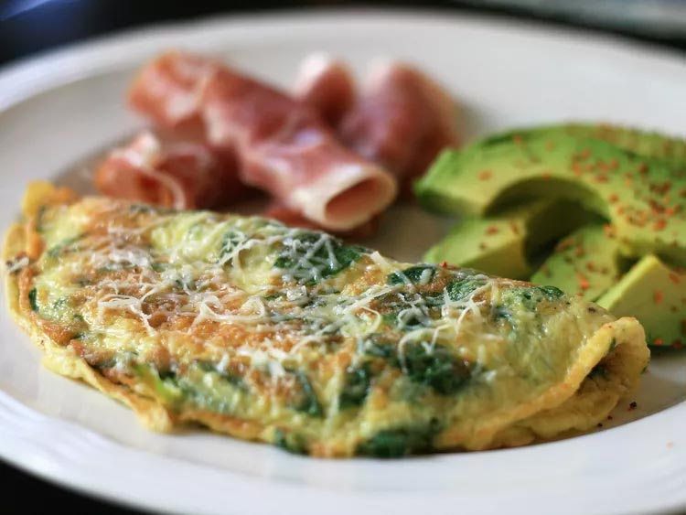

Spinach Omelette
A quick breakfast for those that have places to be but still want to eat! This one is simple and uses one of my favorite veggies!

Image by: France C
Ingredients:
- 2 eggs
- Baby spinach
- Salt & pepper
- Onion powder
- Shredded/grated parmesan (or any cheese of choice)
- Optional:
- Ham (or any protein of choice)
Directions:
- In a bowl, whisk your eggs.
- Add in your spinach, cheese, and diced protein (how loaded you want it to be is up to you!).
- Sprinkle in seasonings to taste.
- Spray a pan with cooking spray and apply on medium heat.
- Pour in your omelette mixture and cook for about 2-3 minutes on each side.
- Turn the heat to low and continue cooking until the eggs are cooked to your preference.
- Enjoy!
Table of Contents
Recipes